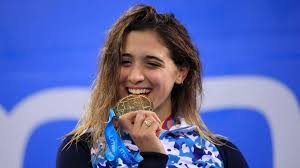
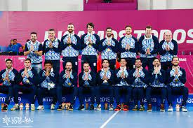

Deportes con mayor relevancia para la delegación nacional
NATACIÓN
La Confederación Argentina de Natación (CADA) es siempre destacada para la sumatoria albiceleste en los medalleros del orden panamericano.
DEPORTES INDIVIDUALES
En el orden de los deportes individuales, la Selección cuenta con posibilidades de medallas aseguradas en el ámbito del atletismo, judo y canotaje, donde varias figuras se han lucido hasta en podios olímpicos recientemente.
DEPORTES EN CONJUNTO
Argentina se caracteriza por una fortaleza importante en los deportes desarrollados en equipo, tales como el básquet, voley, rugby y balonmano.
